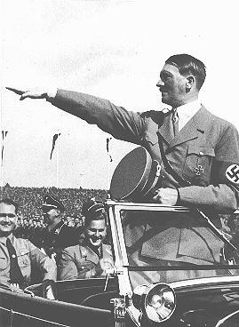

This photograph shows Adolf Hitler during a Nazi rally in the 1930s in Germany. It was taken by a professional photographer working for Nazi propaganda, probably by Heinrich Hoffmann, who was Hitler's official photographer. The photo was shot with a black-and-white film camera, which was common at that time. It captures Hitler in an open car while giving the Nazi salute to the crowd. The purpose of taking such photos was to spread Nazi propaganda and to show Hitler as a strong leader to the German people and the world.